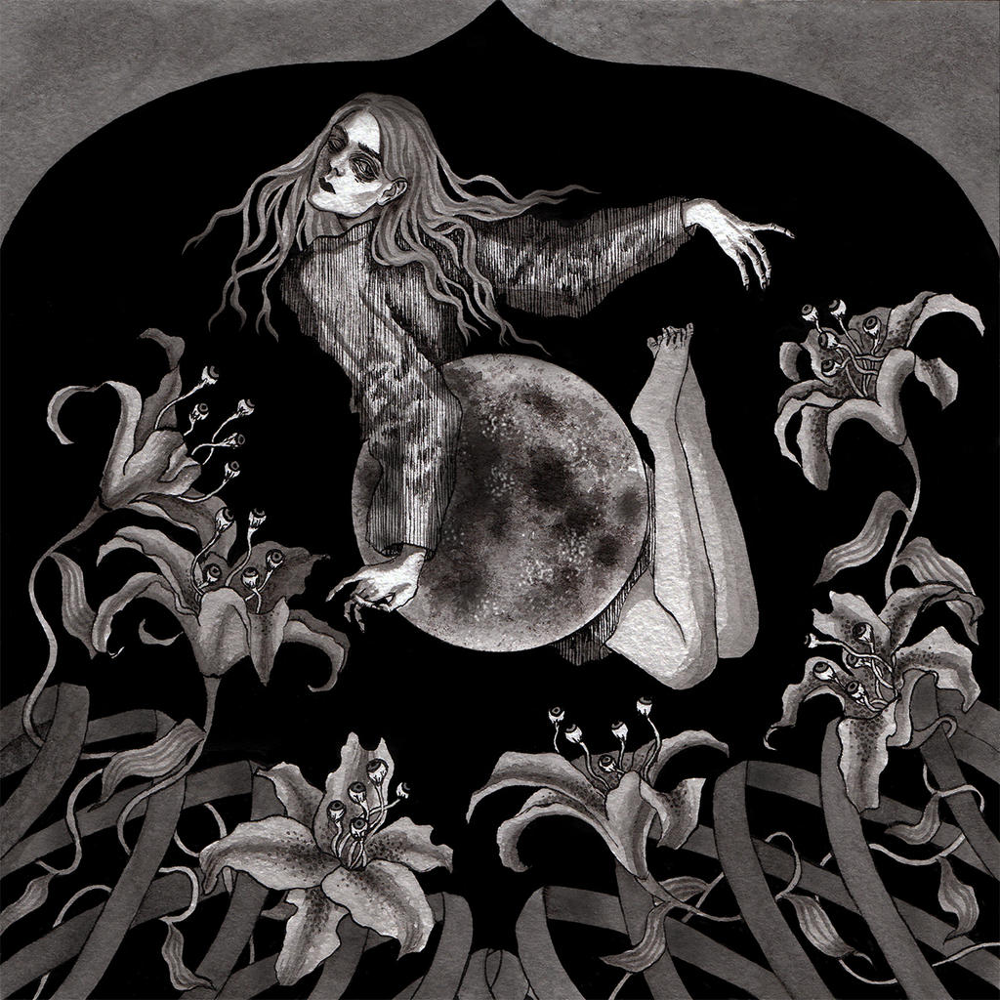
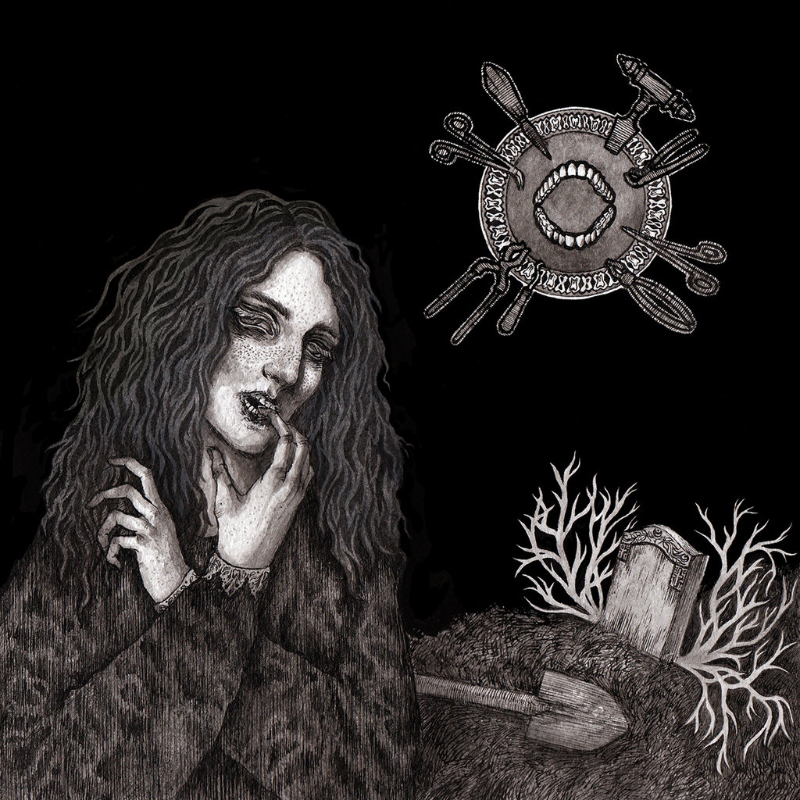
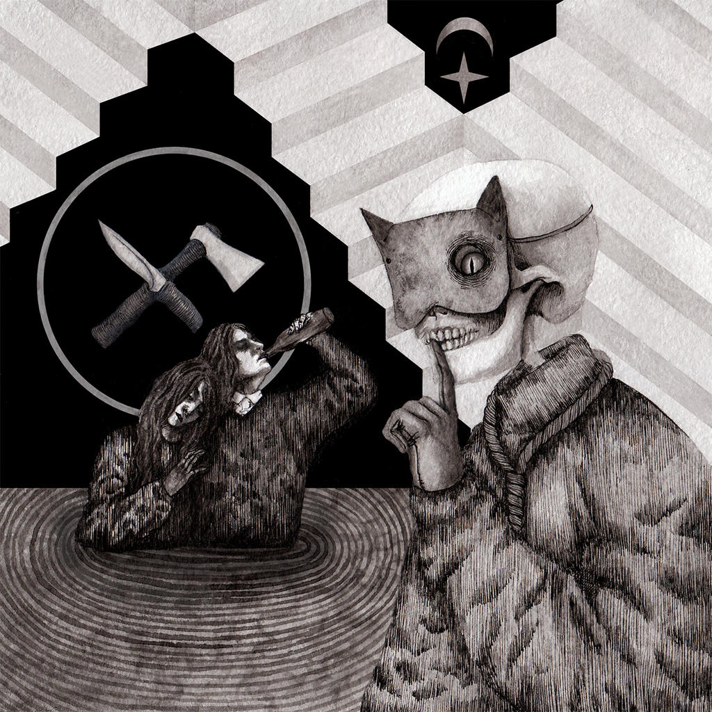
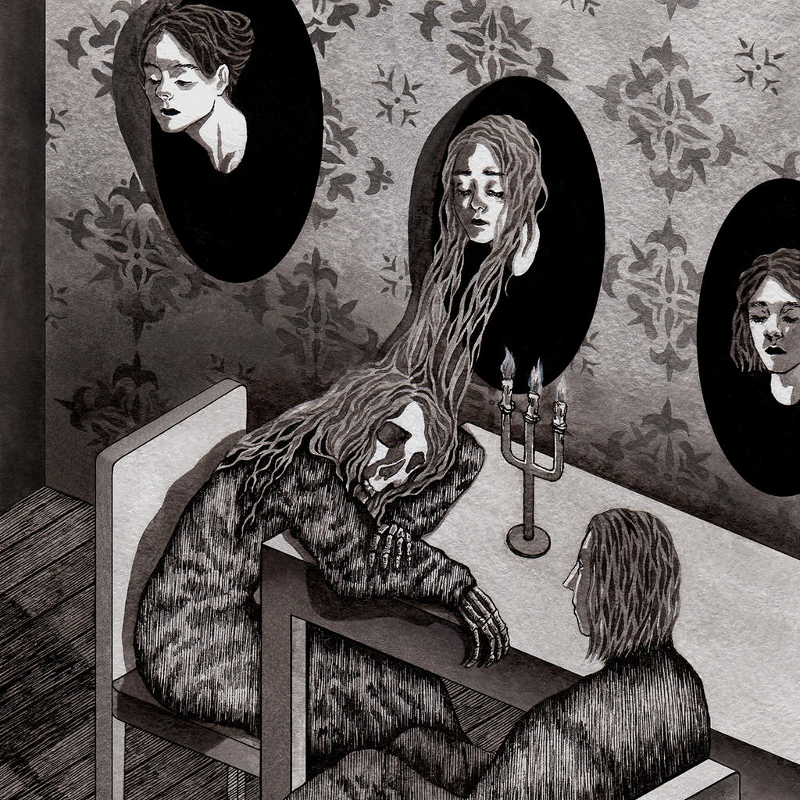
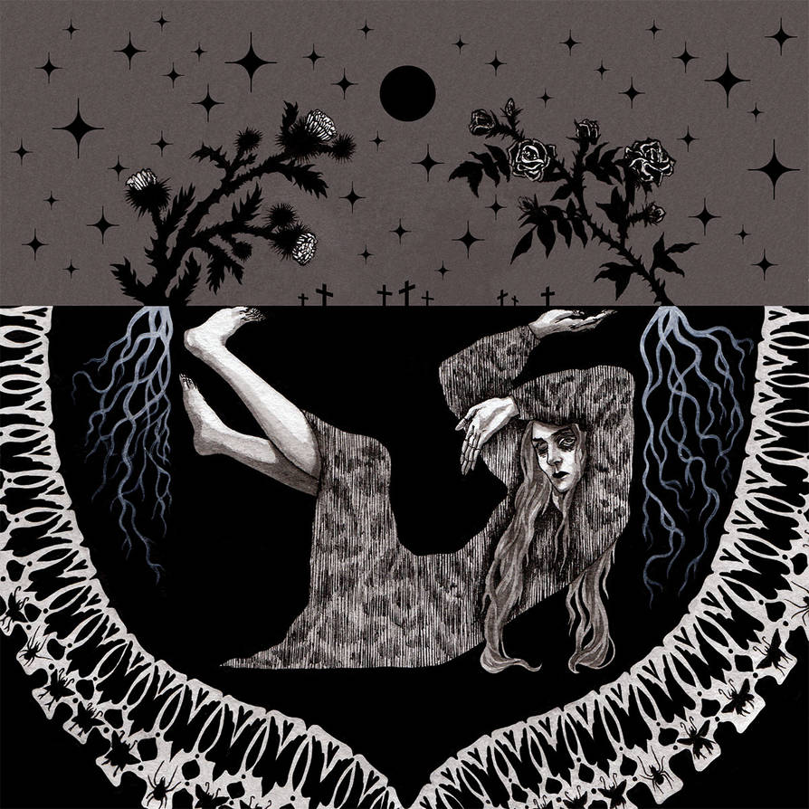
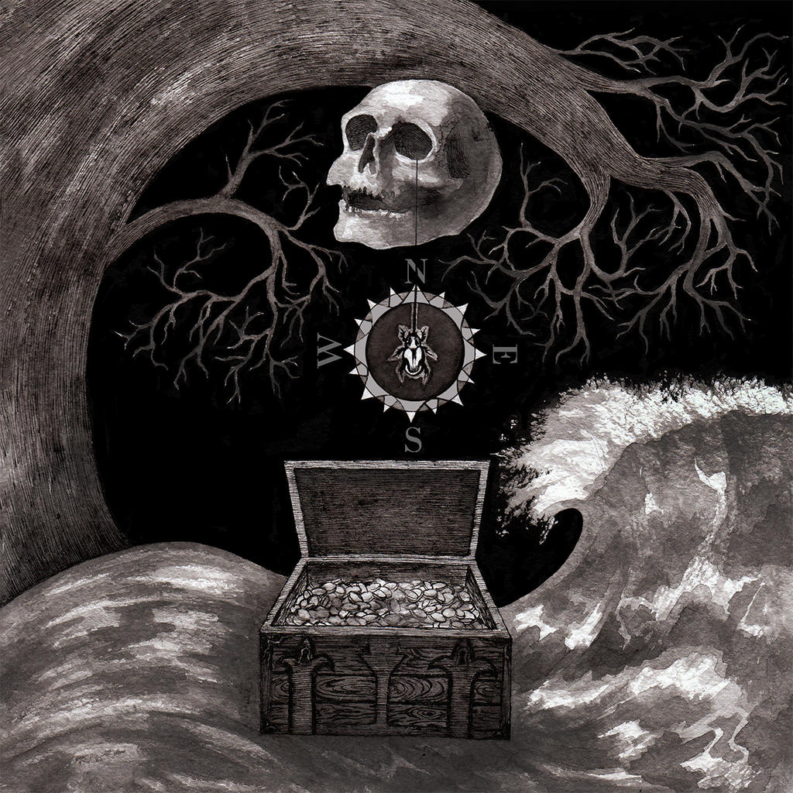

Home
Vida
Obras
Annabel Lee

Clique para download
Berenice

Clique para download
O Gato Preto

Clique para download
O Retrato Oval

Clique para download
O Enterro Prematuro

Clique para download
O Escaravelho de Ouro

Clique para download